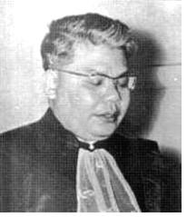

Lời Mở Đầu

uộc chiến ác liệt đã tàn phá đất nước Việt Nam thân yêu ngót 30 năm, và chưa có dấu hiệu nào chứng tỏ sắp được kết thúc nhờ thiện chí cùng lòng yêu chuộng công lý - hoà bình.

Linh mục Cao Văn Luận
Từ lâu rồi, Chiến Tranh Việt Nam luôn luôn được nói tới như một vấn đề thời sự quốc tế sôi động nhất, làm xúc dộng dư luận thế giới nhiều nhất, đến nỗi Đức Phao Lồ đệ lục phải phát khóc.
Sự kiện này, một phần vì chiến tranh Việt Nam cứ ngày càng leo thang với nhiều loại vũ khí tối tân mới xuất hiện lần đầu, và càng leo thang thì nó càng mở rộng.
Phần khác, chưa bao giờ những hoạt động ngoại giao quốc tế lại nhộn nhịp như trong chiến tranh Việt Nam, nhưng càng hoạt động thì vấn đề có vẻ bế tắc hơn, đôi khi gần như vô phương giải quyết.
Dầu bên nào cũng luôn luôn lớn tiếng hô hào hoà bình, và tự nhận mình có thiện chí trong việc tìm một giải pháp chấm dứt chiến tranh Việt Nam, nhưng cho đến nay, mọi người đều thấy viễn ảnh hoà bình còn quá xa vời, chứ không nằm trong tầm tay như Tiến sĩ Kissinger đã nói.
Hoà bình niềm khát vọng chung của nhân loại, riêng đối với dân tộc Việt Nam, khát vọng đó càng lớn lao hơn, vì nếu kể từ ngày Đệ nhị thế chiến kết thúc, chưa một cuộc chiến tranh cục bộ nào lại kéo dài và tàn khốc như chiến tranh Việt Nam.
Mặt khác, nhiều nước Tây phương, phát triển quốc gia theo chiều hướng tư bản, chủ trương vào kỹ nghệ nặng, đặc biệt kỹ nghệ quốc phòng, vũ khí chủ nghĩa này đã tiến tới cao độ, bước sang quá trình chủ nghĩa đế quốc thì nảy sinh ra xâm lăng - tranh giành, nên phải hứng chịu hậu quả hai cuộc Đệ nhất và Đệ nhị thế chiến là lẽ đương nhiên.
Việt Nam chỉ là một dân tộc nhược tiểu, từ ngày ngày lập quốc đã phải chiến đấu liên miên chống nạn ngoại xâm, nên đã biết nhục vong quốc, và bản tính rất hiếu hoà, chẳng đủ lực xâm lăng ai, cũng chẳng muốn ai xâm lăng mình, thế mà lại bị chiến tranh tàn phá hơn một phần tư thế kỷ rồi, song vẫn chưa biết tới bao giờ mới kết thúc.
Quả thật, chiến tranh Việt Nam đã kéo quá dài, nếu kể từ sau Đệ nhị thế chiến, người ta thấy chiến tranh Quốc - Cộng Trung-Hoa chỉ 4 năm, (tháng 8-1945 đến tháng 10-1949); chiến tranh Triều Tiên chỉ 3 năm (1950-1953); chiến tranh Ấn - Hồi 15 ngày (tháng chạp 1971); chiến tranh Trung Đông giữa Do Thái với các quốc gia A-Rập tuy dằng dai những chỉ xảy ra ba trận; riêng chiến tranh Việt Nam, nếu gộp chung cả cuộc kháng chiến chống Pháp 1946-1954 thì xuýt xoát 27 năm, trong đó có vô số trận trời long đất lở.
27 năm hoà bình, thế giới có nhiều tiến bộ vuợt bực, hai nước Đức, Nhật từ chỗ bại trận đã trở thành những quốc gia hùng mạnh nhất, nhì thế giới; Hoa Kỳ đã 6 lần đưa người lên cung trăng và đang sửa soạn đổ bộ vài hành tinh xa xôi khác; còn Việt Nam, 27 năm chiến tranh, sự sụp đổ tan hoang thật không bút nào kể xiết!
Hàng ngày sống giữa chiến tranh, điêu đứng vì chiến tranh, và, bất cứ lúc nào cũng có thể trở thành nạn nhân chiến tranh, nên mọi người hầu như quen đi, chỉ biết chiến tranh là tàn phá, là chết chóc, chứ không để tâm tìm hiểu nguyên nhân gây chiến tranh, và khó có một cái nhin tổng quát để thấy chiến tranh khủng khiếp tới mức độ nào.
Lại nữa, tuy khao khát hoà bình; tuy thấy hoà đàm và mật đàm Paris họp tới họp lui, những cũng không sao đề quyết được nó trục trặc khúc mắc chỗ nào, những bí ẩn bên trong ra sao, và liệu một thoả hiệp ngưng bắn có được lý kết nay mai hay không.
Sự thật chiến tranh Việt Nam, có lắm nguyên nhân, có nhiều bí ẩn, chứ không phải đơn sơ như việc viên phi công trên chiếc pháo đài bay không lồ B-52, chỉ cần bấm nhẹ tay vào nút điện là một quả bom nặng 7 ngàn cân rơi xuống; nếu đơn sơ như thế thì cuộc chiến hiện nay đã chấm dứt từ lâu rồi.
Cho đến nay, dầu những người am hiểu thời cuộc nhất, hẳn cũng phải đâm ra hoang mang nghi ngờ, và không khỏi lúng túng trước một vài thắc mắc:
- Tại sao chiến tranh Việt Nam cứ kéo dằng dai, ngày càng mở rộng và leo thang
- Tại sao mật đàm và hoà đàm Paris mở ra gần 4 năm mà một giải pháp chấm dứt chiến tranh Việt Nam vẫn chưa tìm thấy?
Càng thắc mắc hơn nữa khi người ta nhớ lại rằng 1968, khi ra tranh cử tổng thống, ứng cử viên đảng Cộng hoà Richard Nixon đã tuyên bố sẽ tìm cách chấm dứt chiến tranh Việt Nam, nếu đăc cử.
Hơn 3 năm qua, trên cương vị một nhà lãnh đạo Hoa Kỳ, tổng thống Nixon đã đưa được hơn nửa triệu quân Mỹ từ Nam Việt Nam trở về nước, và để ra chánh sách Việt Nam hoá chiến tranh, khiến sự thương vong lính Mỹ từ trên 300 mỗi tuần, nay hạ thấp tới mức chỉ trên đầu mười ngón tay.
1972, tổng thống Nixon lại đưa ra đề nghị mới 8 điểm, trong đó có điểm tổng thống Thiệu và Phó tổng thống Hương từ chức và cho phía bên kia tham gia ứng cử bầu cử.
Tháng Hai và tháng Năm 1972, tổng thống Nixon qua Bắc Kinh và Moscow; ai cũng tưởng vì hai cuộc công du lịch sử này, chiến tranh Việt Nam nếu không chấm dứt hẳn thì it nhất cũng bị hạn chế bớt.
Sau khi ở Bắc Kinh về, tổng thống Nixon, hôm 23-3-1972 đột nhiên đơn phương công bố quyết định đóng cửa hoà đàm Paris, viện lẽ Cộng sản Bắc Việt chẳng chịu thương thuyết nghiêm chỉnh.
Hoà đàm Paris đóng cửa được một tuần thì ngay đầu tháng Tư 1972, Cộng quân Bắc Việt vuợt tuyến, dùng lối đánh trận địa chiến, có xe tăng thiết giáp yểm trợ, tấn công vùng giới tuyến Việt Nam Cộng Hoà, và những tuần kế tiếp, mở rộng tới An Lộc - Kontum…
Trước ngày đi Nga, hôm 8-5-1972, tổng thống Nixon đã quyết định dùng những biện pháp mạnh đối với Bắc Việt như phong toả các hải cảng bằng mìn tự động, và ra lệnh cho không lực Mỹ mở lại các cuộc oanh kích.
Sau cuộc Nga du của tổng thống Nixon, các cuộc mật đàm giữa Kissinger và uỷ viên Bộ chính trị Bắc Việt Lê Đức Thọ được xúc tiến tích cực, và trước ngày bầu cử tổng thống Hoa Kỳ 4-11-1972, người ta nghe nói đến việc Mỹ - Bắc Việt có thể ký một thoả hiệp ngưng bắn vào ngày 31-10-1972.
Nhưng rồi tất cả mọi dự đều qua đi, và người ta lại thấy chiến tranh Việt Nam thêm một bước leo thang mới, qua việc Mỹ mở lại những cuộc không tập Bắc Việt với hàng trăm phi xuất mỗi ngày.
Đây là những cuộc oanh tạc dữ dội nhất trong chiến tranh Việt Nam, vì có sự tham gia đông đảo của pháo đài bay khổng lồ B-52, và chỉ nội trong một tuần, kể từ 18 tháng 12 đến 24 tháng 12-1972, riêng số bom dội xuống lãnh thổ Bắc Việt lên tới 40 ngàn tấn, và có khoảng 15 chiếc B-52 bị Bắc Việt bắn rơi.
Trên đây chỉ là một khía cạnh, một bí ẩn mà thôi; trong chiến tranh Việt Nam còn có rất nhiều bí ẩn khác, nếu không chịu khó thu thập tài liệu đầu thì không thể nhận xét và phân tách một cách đúng đắn được.
Hoàng Thanh Hoài, một cây viết trẻ, đã có công sưu tầm tài liệu, chọn lọc phân tách, rồi viết thành tác phẩm CHIẾN TRANH VIỆT NAM.
Chỉ với đầu để cuốn sách, nguời ta đã thấy sự cố gắng rất nhiều của tác giả, vì nếu không dồi dào tài liệu, ắt tác giả không dám viết nên một tác phẩm liên quan tới vấn đề thời cuộc gian lao, từng làm rúng động dư luận khắp năm châu thế giới.
Đúng như tác giả đã viết nơi phần mở đầu, chiến tranh Việt Nam là cuốn sách gồm nhiều tài liệu xuất xứ khác nhau, được đúc kết lại sau khi chọn lựa và phân tách; nó giống như cuốn phim, chiếu lại từ đầu cho người đọc thấy những nguyên nhân và bí ẩn của cuộc chiến.
Nhờ những tài liệu này, người đọc có thể nhìn thấy toàn diện bộ mặt thật của chiến tranh Việt Nam, và sẽ hiểu tại sao thế giới có nhiều kẻ kết án chiến tranh Việt Nam là một cuộc chiến ô nhục, bẩn thỉu, diệt chủng, vô nhân đạo.
Nói đến chiến tranh - bất cứ chiến tranh nào, kể cả những cuộc Thánh chiến giữa các tôn giáo là nói đến ô nhục, bẩn thỉu, vô nhân đạo rồi, vì chiến tranh là chết chóc, tàn phá, là tiêu diệt. Cuộc chiến tranh giữa những người da trắng đi chinh phục, khai thác và mọi da đỏ bên Tân thế giới là một cuộc chiến tranh diệt chủng, vô nhân đạo.
Trong chiến tranh Việt Nam, sự ô nhục, bẩn thỉu, vô nhân đạo phải được hiểu theo một ý nghĩa sâu xa hơn, vì đây là cuộc chiến bất tương xứng, và có vẻ được dùng vào những mục tiêu mặc cả, đổi chác, chia xớt quyền lợi giữa những siêu cường quốc trên thế giới.
Hoàng Thanh Hoài, khi xây dựng tác phẩm chiến tranh Việt Nam, đã dựa vào những tài liệu thu thập được để đưa ra một số nhận định, càng giúp cho người đọc hiểu rõ ý nghĩa sâu xa của chiến tranh; đồng thời giải toả bớt thắc mắc, và có thể đoán biết trong tương lai, ngõ rẽ chiến tranh Việt Nam sẽ như thế nào, chấm dứt hẳn hay vẫn tiếp tục leo thang.
Chiến tranh Việt Nam là cuốn sách thuộc loại thời sự, đáng lẽ khô khan và chỉ thích hợp với một số người. Đằng này, nhờ trình bày như một cuốn phim, phân chia tiết mục rõ ràng, tài liệu xúc tích, nên bất cứ ai, càng đọc càng cảm thấy thích thú.
Thật vậy, tác giả đã đưa người đọc lùi về dĩ vãng xa xăm, từ thời mà thực dân Pháp còn ở bên Ấn Độ nhìn qua Việt Nam với cặp mắt thèm thuồng; rồi từ sự bóc lột của thực dân đến các phong trào Cần Vương; từ sự hình thành các đảng phái chính trị Việt Nam đến cuộc khởi nghĩa mùa Thu năm Ất Dậu.
Đặc biệt cuộc khởi nghĩa của nhân dân Việt Nam tháng 8-1945, được tác giả trình bày đầy đủ, chẳng những bằng tài liệu mà bằng cả chứng kiến; nào tình hinh chính trị rối ren vì sự đấu tranh quyết liệt giữa Việt Minh cùng các tôn giáo - đảng phái quốc gia chân chính; nào kinh tế suy sụp; nào người ngoại giao khó khăn nào quân sự cấp bách v.v…
Ngay chương đầu, tác giả đã làm sống lại hình ảnh những cuộc tranh chấp đẫm máu giữa người, Việt với người Việt, chẳng hạn Việt Minh và Quốc Dân Đảng thanh toán nhau, và khu tự trị Bùi Chu- Phát Diệm cùng Liên Đoàn Công Giáo Việt Nam thuộc Liên khu IV thề sống chết với Cộng sản.
Nhờ những tài liệu dộc đáo này, người đọc mới thấy nguyên nhân gây chiến tranh Việt Nam bắt nguồn từ xa xưa, và theo giòng thường gian, màn nọ nối tiếp màn kia, tạo nên cuộc chiến kinh khủng như hiện tại.
Tiếc rằng vì đất nước bị phân chia từ lâu, không thể có sự tự do đi lại giữa hai miền Nam - Bắc, và vì những hạn chế của chiến tranh cùng và số nguyên nhân khác cản trở tác giả trong công cuộc sưu tầm tài liệu - mà dù có sưu tầm đầy đủ thì thời gian cũng chưa cho phép tác giả trình bày vấn đề hoàn toàn theo ý muốn.
Vì thế, cuốn Chiến tranh Việt Nam chưa hẳn đáp ứng đầy đủ mọi đòi hỏi của độc giả, nhưng chắc độc giả cũng như tôi, sẵn sàng thông cảm với tác giả trong hoàn cảnh nói trên.
Dù sao thì với sự cố gắng và dám thẳng thắn trình bày, người ta đủ thấy nhiệt tâm và lòng can đảm của tác giả, bởi Chiến tranh Việt Nam là một vấn đề thời sự lớn, chẳng những liên quan tới nhiều giới, nhiều người, mà còn liên quan tới nhiều quốc gia trên thế giới.
Bởi thế, tôi sẵn sàng giới thiệu cuốn Chiến tranh Việt Nam với quý độc giả, và cầu mong một tương lai không xa, khi hoàn cảnh thuận tiện, tác giả sẽ cho tái bản và đầy đủ tài liệu cùng hình ảnh như y muốn lúc đầu.
Sài gòn, ngày đầu năm dương lịch 1973
Linh mục Cao Văn Luận
Nguyên Viện trưởng Viện Đại học Huế